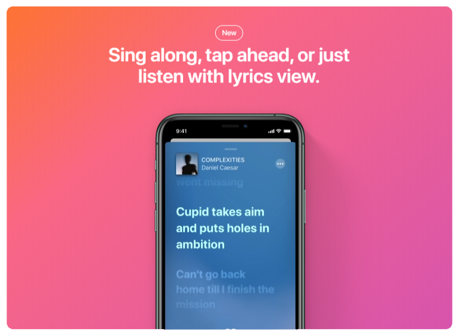

It's as easy
as it sounds.



CSS 수업을 들을 때 position sticky를 배우긴 했지만, 간단한 위치 고정이외에는 Java Script를 사용해야한다고만 듣고 넘어갔었다. 드디어 재미있는 화면을 만들었다..! 스크롤 위치값을 구해서 Opacity와 Scale 값을 조절하는 방법을 배웠다. 생각보다 방식이 엄청 간단했고, 멋있는 화면을 만들어낸 것 같다..! 스크롤 위치값을 변경하게 된다면 처음부터 다시 계산해야하긴 하지만.. ㅎ 이 화면을 만들고 나니까 이런 지식이 있어야 화면 설계도 재밌게 할 수 있겠구나 생각했다. 결국 이런 화면을 설계하고 요청하는건 디자이너인 경우가 많을테니 아무튼 너무 재밌었고 이런 화면을 언젠가 어디에 써먹어보고 싶다!